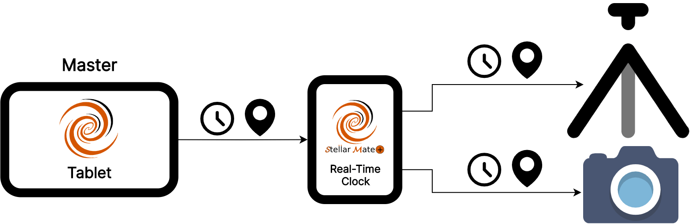
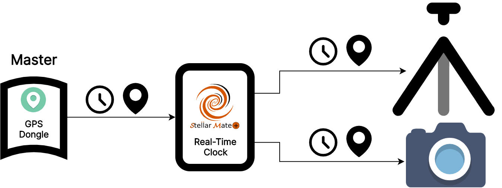
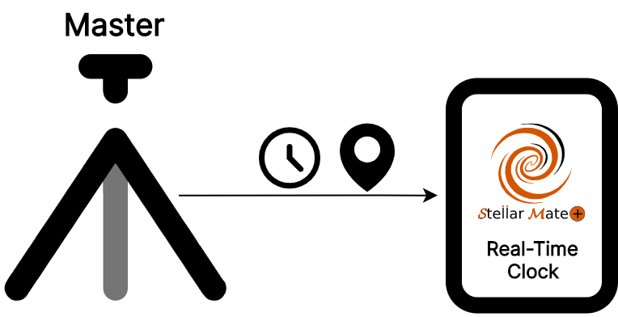
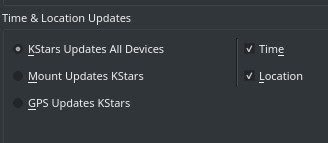

Time & Location
In order to ensure smooth and accurate operation of the astrophotography workflow, both time and location information must be precise across all devices in the system. Therefore, the time and location on StellarMate must be in sync with the time and location on all connected devices, especially mounts.
StellarMate Plus Controller is equipped with a Real Time Clock (RTC). This ensures that the internal clock keeps ticking even when the power is switched off. When SM Plus is powered on, it reads the time from the onboard RTC. While this value might drift off by a few seconds over time, it is critical to minimize any large errors that otherwise would accumulate over time unchecked.
|
Note |
|
|
|
For users who installed StellarMate OS on their own Raspberry PI4 SBCs, it’s recommended to invest in installing an DS3231 RTC module or use a GPS dongle. |
While the RTC provides acceptable time tracking, it does not offer location information. Therefore, GPS is the recommended solution in the long term. The following are the supported GPS sources:
- Tablet/Mobile GPS: The StellarMate App relays the tablet/mobile time and location information to StellarMate. Everytime the SM App is connected to SM Plus, it automatically synchronizes both time and location information accordingly.

- External GPS Dongle: SM Plus supports a number of dedicated external GPS dongles connected via USB. Once connected, select the GPSD driver in your equipment profile in order to utilize the GPS.

- Mount with GPS: Some mount have internal or external GPS adapters. These adapters cannot be connected directly to StellarMate, they are used to update the time and location on the mount handset. You can select Mount as the source of data if desired.

Every time the StellarMate Mobile App is connected to StellarMate, it syncs both time and location information from the tablet/phone GPS. If the SM App is not used (for example, when using Ekos on a PC/Mac), then StellarMate relies primarily on RTC as the time source.
In KStars, it is possible to specify the Time Source. Click on Settings → Configure KStars → INDI.

By default, KStars is the source of all time and location information. The KStars time depends on the system time for StellarMate, and therefore depends on the RTC. If StellarMate is connected to the internet, the system would also synchronize the time to online time servers and synchronize the RTC clock accordingly. Now both the internet time and RTC clock are again in sync to account for any drifts that might build up in the RTC.
After connecting the SM App to StellarMate, the KStars’ location is updated to the tablet/mobile GPS location. You can also change the KStars location from Settings → Geographic and then select or add a new location.
|
Tip |
|
|
|
You can use StellarMate App to quickly synchronize StellarMate Plus time and location. The time and location are automatically set whenever the App communicates with StellarMate. Afterwards, you may continue to use the SM App, or use Ekos to setup your astrophotography workflow. |
Therefore, in KStars, the time and location information MASTER source can be selected from the following sources:
- KStars Updates All Devices: KStars time and location is the primary source and all connected devices (mounts..etc) are synchronized to KStars time and location. When using SM App, it’s recommended to leave this option as is.
- Mount Updates KStars: The mount time and location are used to update KStars time and location. Some mounts are equipped with internal or external GPS, KStars does NOT connect to these mount-specific GPS dongles. Instead, KStars communicates with the mount via the Handset/WiFi to query time and location information and then uses them as the source.
- GPS Updates KStars: When using a dedicated externa GPS dongle, select this option to ensure the GPS dongle is the master source for both time and location. When Ekos detects a GPS device, it will prompt the user to switch to it as the master time & location source.
Therefore, you must select which source is the most accurate and reliable for time & location information. By default, KStars is the master source for time and location data.
|
WARNING |
|
|
|
Turn off DST / Daylight Saving settings in the handset as this could interfere with correct time settings. |